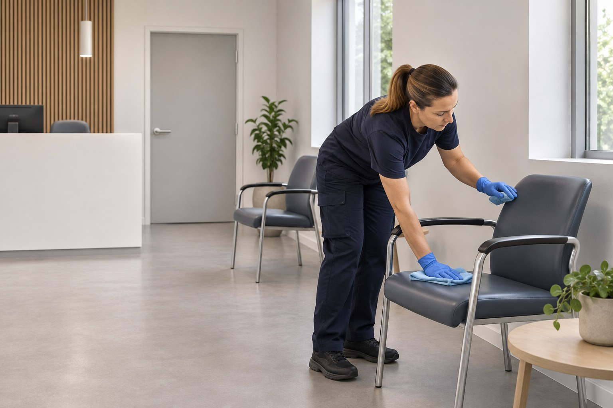

Aftalte rum
Vi aftaler rengøring af venteområde, adgangsarealer, toiletter og personalerum. Behandlingsrum beskrives særskilt ud fra klinikkens instrukser.
Erhvervsrengøring · Struer og Thyholm
Rengøring af klinik efter aftale, så den passer til jeres åbningstid. Vi afklarer lokaler, opgaver og klinikkens instrukser før opstart.
Få et skriftligt tilbudRing 77 17 85 88
Vi aftaler rengøring af venteområde, adgangsarealer, toiletter og personalerum. Behandlingsrum beskrives særskilt ud fra klinikkens instrukser.
Områder, overflader, midler og hyppighed afklares sammen med klinikkens kontaktperson.
De aftalte opgaver og tidspunkter samles i en tjekliste. Særlige hensyn og adgang afklares før arbejdet starter.
Fotos kan sendes til kontakt@hutsol.dk. Formularen kan bruges til en kort beskrivelse.
Udpeg en kontaktperson, og gennemgå klinikkens instrukser med os. Aftal adgang, materialer og nødvendig oplæring, før opgaven starter.
Send oplysninger om opgaven, by og ønsket tidspunkt. Vi afklarer spørgsmål og behov for et besøg.
Du får et skriftligt tilbud. Omfang, pris og adgang aftales, før arbejdet starter.
Vi udfører det aftalte arbejde og gennemgår opgaven ud fra den aftalte liste.
Fast månedspris efter en gratis besigtigelse. Lokaler, frekvens og den aftalte tjekliste danner grundlag for tilbuddet. Særlige opgaver afklares særskilt.
Se vores priser. En forespørgsel er ikke en bekræftet booking eller et løfte om, at opgaven kan udføres på to timer.
Opgaver og frekvenser samles i den aftalte tjekliste. Vi gennemgår resultatet ud fra aftalen. Ændringer afklares med den faste kontaktperson.
Nej. Eventuel hjælp til sortering eller ilægning i klinikkens instrumentvaskemaskine kræver særskilt afklaring og dokumenteret oplæring efter skriftlige procedurer.
Sterilisation er ikke en del af denne rengøringsaftale.
Oplys klinikkens mulige tidsrum. Arbejdstid og adgang aftales før opstart.
Klinikkens kontaktperson gennemgår krav og instrukser med os, så opgaver og ansvar er tydelige før en aftale.
Vi hjælper i Struer, Holstebro, Lemvig og på Thyholm samt nærområder. Fortæl, hvor opgaven er.
Få et skriftligt tilbudRing til os